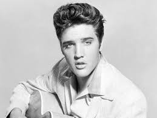
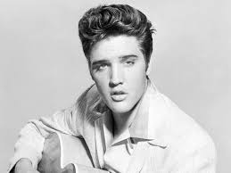

Cream were a British rock band formed in London in 1966. The group consisted of bassist Jack Bruce, guitarist Eric Clapton, and drummer Ginger Baker. Bruce was the primary songwriter and vocalist, although Clapton and Baker also sang and contributed songs. Formed from members of previously successful bands, they are widely regarded as the world's first supergroup.[2] Cream were highly regarded for the instrumental proficiency of each of their members. Tensions between Bruce and Baker led to their decision in May 1968 to break up, though the band were persuaded to make a final album, Goodbye, and to tour, culminating in two final farewell concerts at the Royal Albert Hall on 25 and 26 November 1968 which were filmed by the BBC and shown in theatres, then in 1977 released as a home video, Farewell Concert.
 
